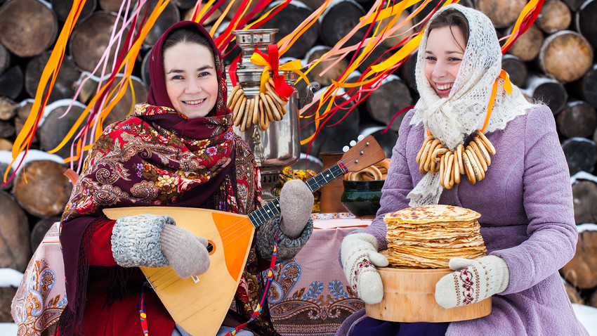

Maslenitsa is traditional folk celebration in almost all Slavic countries.
However, the time and some details different from country to country. The main
ritual of this tradition is the burning of straw figure that represents the
Winter, which is accompanied by huge folk festivals . In Russia this celebration
is also known as pancake week, as the celebrations are full of eating
traditional Russian pancakes called blini, filled with various fillings
including caviar and sour cream. In Czech Republic and Slovakia is this
tradition followed by the celebration of day of Love, nowadays mainly celebrated
by kissing under the blooming tree, which should make the couples love stronger.
Date: The last week before Great Lent